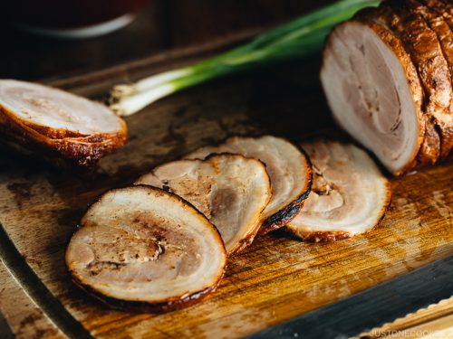

Chashu

What is chashu?
Chashu is a popular topping for ramen. It's made by braising a rolled up marinated pork belly for two hours.
Ingredients (for ten)
- 1 pork belly
- 900ml soy sauce
- 200ml dry sake
- 200ml mirin
- 1 bulb garlic
- 4 slices ginger
- 2 spring onions
Steps
- Fold the pork belly in half and tie into a round shape.
- Mix the soy sauce, dry sake, mirin, garlic (cut in half), ginger and spring onion in a pot and add the pork belly. Make sure it's submerged.
- Simmer for two hours, making sure the pork stays submerged. Add more sake/water when necessary.
- Remove the pork belly from the pot and cool in the fridge, preferably overnight.
- Remove the ties and slice thinly.